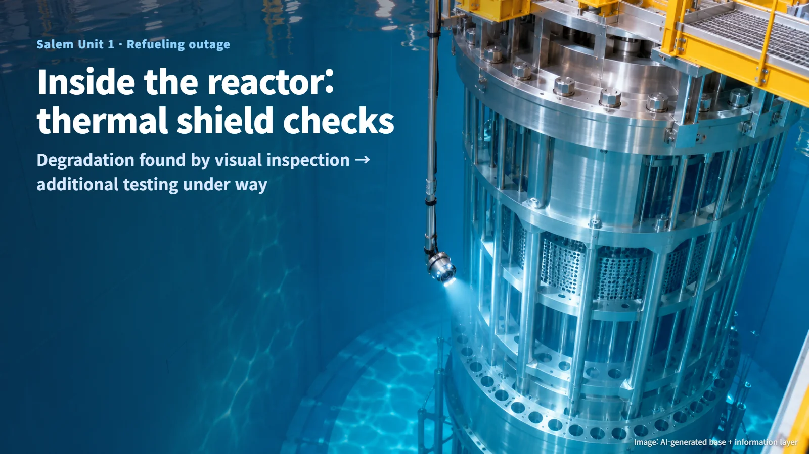
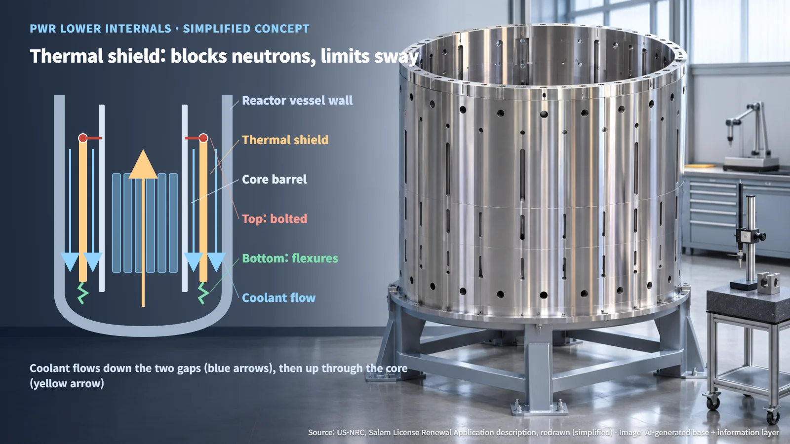
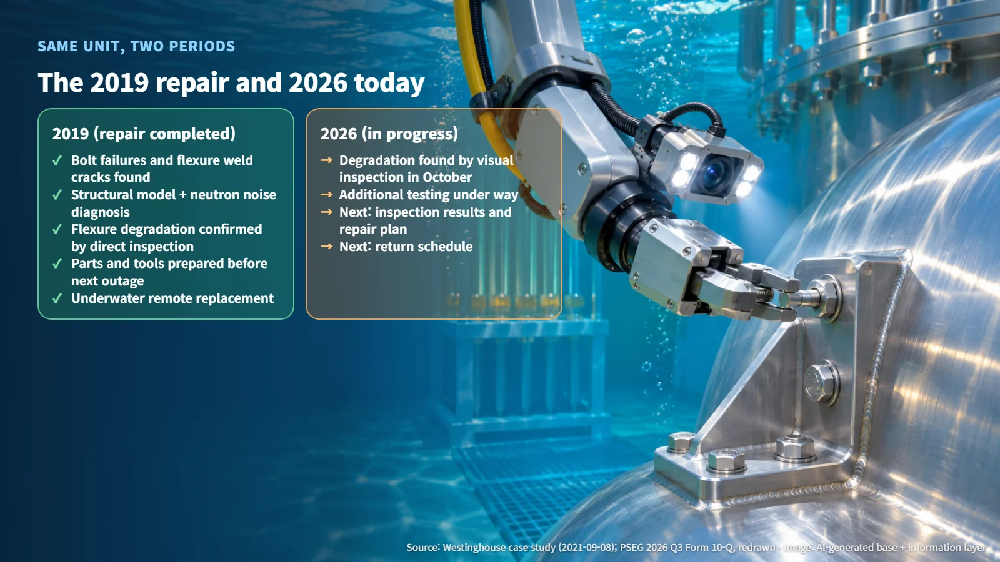
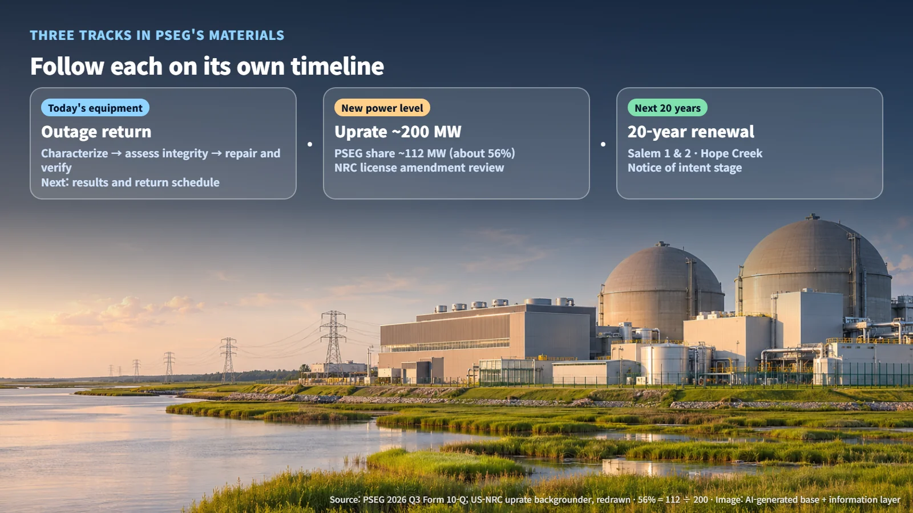

United States · Operations
Degradation Found in a Reactor's Thermal Shield: Salem Unit 1's Additional Inspection and a 200 MW Uprate Plan
PSEG found degradation in Salem Unit 1's thermal shield during its October refueling outage and has begun additional testing, while a roughly 200 MW uprate follows its own licensing path.
News that worn components have turned up inside a nuclear reactor can understandably raise concern. A disclosure of exactly that kind recently came from Unit 1 of the Salem nuclear plant in New Jersey. This post walks through what the component does, which checks are now under way, and the separate path the plant's power uprate plan will follow.

Degradation Found During an Outage, Now in Additional Testing
In its third-quarter filing (Form 10-Q) on November 2, 2026, US utility Public Service Enterprise Group (PSEG) reported that a visual inspection during Salem Unit 1's scheduled refueling outage in October identified degradation of the thermal shield equipment inside the reactor vessel. The company has begun additional testing and expects the inspections to extend the refueling outage.
According to the company, how much longer the outage runs depends on the timing and results of the inspections and on any repairs that are needed. The specific location of the damage, its cause, the inspection acceptance criteria, a return-to-service date and the final cost have not been disclosed.
Here is what has been established so far: while the reactor was shut down to replace fuel, a visual inspection of its internal structures found an anomaly. The next chapter of this story therefore begins with what the additional inspection results show.
What a Thermal Shield Does: A Cylinder That Blocks Neutrons and Holds Steady
According to Salem's license renewal application, the thermal shield is a lower internals component responsible for neutron shielding of the reactor vessel. The reactor core, where the fuel sits, constantly gives off neutrons, and the thermal shield acts as an extra layer of armor that intercepts them before they reach the vessel wall.
Cooling water flows down through the gap between the core barrel (the cylinder that surrounds the core) and the thermal shield, and through the gap between the thermal shield and the vessel wall, then turns and passes upward through the core. In other words, the thermal shield stands right in the middle of the coolant's path.
The way it is supported is worth a closer look. The top of the thermal shield is bolted to the core barrel, while the bottom is attached through axial flexures. When the reactor heats up, metal expands, and the thermal shield and core barrel grow lengthwise by different amounts (differential thermal expansion). The flexures accommodate that up-and-down movement while restraining radial and horizontal motion, the side-to-side sway. Picture a shelf whose top edge is firmly anchored to a wall while its bottom edge sits in a slot that lets it slide only up and down.

That is why the effects of any degradation are evaluated against two functions: neutron shielding and structural support.
What the Same Unit's 2019 Repair Shows About the Diagnostic Sequence
Salem Unit 1's thermal shield has a repair history. According to a technical case study published by Westinghouse on September 8, 2021, failed thermal shield support block bolts and cracked flexure welds were found at Salem Unit 1 in 2019.
The diagnosis at that time combined a structural analysis model with neutron noise monitoring. Neutron noise monitoring analyzes tiny fluctuations in the core's neutron signal to infer how structures are vibrating. Because the problem could be read while the plant was operating, replacement parts and tools were developed, verified and tested before the next outage, and the replacement was completed with underwater remote tooling.
Setting the two periods side by side, step by step:
- 2019: bolt failures and flexure weld cracks found → structural model and neutron noise predicted flexure degradation → confirmed by direct inspection → replacement parts and tools prepared before the next outage → underwater remote replacement
- 2026: degradation found by visual inspection during the outage → additional testing under way → results pending
The 2019 record serves as a reference case for how diagnostic methods connect to repair preparation. The mechanism behind the 2026 degradation will be established from the inspection data now being collected.

Outage Return, Power Uprate and License Renewal: Three Tracks, Three Next Steps
PSEG's materials describe three separate matters involving Salem, and each requires different evidence and has a different next step.
(A) Return from the outage: The technical basis for returning to service follows a sequence: characterize the current flaw → assess function and integrity → carry out and verify any needed repairs. The next information to watch for is the additional inspection results, a repair plan and a return schedule.
(B) Power uprate: PSEG says it is developing power uprates totaling about 200 MW at Salem, of which about 112 MW corresponds to PSEG's ownership share. Calculating 112 MW ÷ about 200 MW gives roughly 56%, so a little more than half of the total capacity increase would belong to the company. As covered in the October 29 post on Constellation's uprate loan, an uprate is a way to get more electricity out of an existing nuclear plant. The US Nuclear Regulatory Commission (NRC) explains that an uprate changing a plant's licensed maximum thermal power requires review of an operating license amendment. The licensee demonstrates the safety of systems, equipment and accident analyses at the higher power level, and the NRC reviews that case. How the additional inspection results relate to the uprate's design conditions remains to be seen.
(C) License renewal: PSEG has notified the NRC of its intent to apply for 20-year renewals of the operating licenses for Salem Units 1 and 2 and Hope Creek. It has also presented power sales to large customers such as data centers as an option. The process is currently at the notice-of-intent stage; the next steps are the application itself and NRC review.
In short, (A) concerns the integrity of the equipment as it stands today, (B) concerns safety at a new power level, and (C) concerns the next 20 years of operation. Following each track on its own timeline makes it easy to tell which stage any new headline belongs to.

Finding degradation in a reactor internal component is the starting point of a verification process that runs through inspection, evaluation, repair and confirmation. Salem Unit 1 is now working through the first of those gates: the additional inspection.